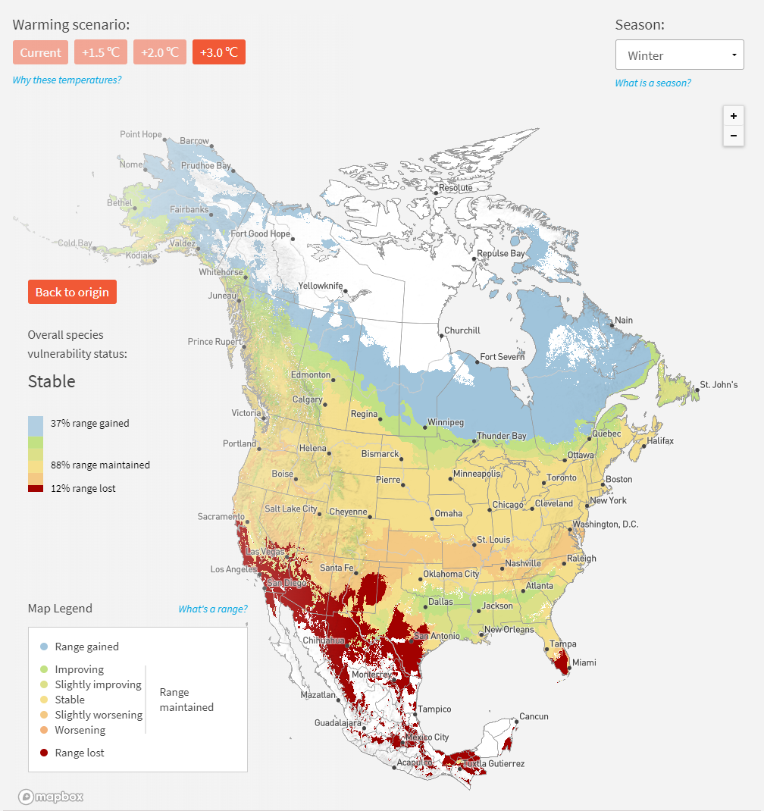

Bald Eagle is a large prey bird, with an adult sea eagle body length of up
to 1 meter and a wingspan of more than 2 meters. Its eyes, mouth and feet are pale yellow.
Its feathers on the head, neck and tail are white, while the feathers on the rest of its
body are dark brown, which is very majestic and beautiful. Mainly inhabits the coast, lakes
and rivers, and feeds on large fish such as salmon and trout, as well as water birds such as
mallards and seagulls, and small mammals living near the water. They are good at flying. The
edge of the upper beak has an arc-shaped vertical protrusion, suitable for tearing the prey
and swallowing. There are some wax film or whisker-like feathers on its base. Their wings
are strong, broad, round and blunt. They fan wings and soaring flight, but the fan wing
rhythm is slower than other falcons. Their tarsus is mostly relatively long, approximately
equal to the length of the shin. The bald eagle is a species endemic to North America. The
U.S. Congress passed a resolution to designate the Bald Eagle as the national bird of the
United States on June 20, 1782.
Bald Eagle picture
Habitat
Bald eagles are proficient at flying. They can fly at speeds of 56 to 70 kilometers per hour
when gliding and flapping their wings, and can still reach speeds of 48 kilometers per hour
if they are flying with a fish in hand. They don't migrate very often. If their territory is
close to the water source, they will not migrate and stay there all year round. However, if
the territory is not close to the water source, it will migrate south when entering the
winter, or migrate to the side of the coast, which can still be easily found food during the
winter.
Diet
Bald eagles have two methods of foraging: hunting on their own, or looking around to see
where other eagles are congregating. For example, when many eagles gather and circle
around a place, other eagles also know that food can be found there. As far as 64
kilometers away, the head eagle can see the circling group of eagles. This way, bald
eagles can find a good meal without much effort. It is very common to steal food from
other eagles.
Reproduction
In spring and summer, adult eagles are busy building their nests. Bald eagles build their
nests in large trees along rivers, lakes or oceans for fishing purposes, and they will use
and build the same nest year after year. During this period, bald eagles prepare to breed
and pair, and they will stick to their own territory. Large groups of bald eagles often
gather around a rich food source. Bald Eagles keep a mate for their whole life. When it
comes to the breeding season, bald eagles often gather in groups in some areas with rich
food and build their nests on cliffs or on the tops of towering trees. Female birds
generally lay eggs around early November, but the period can vary by several months. Two
eggs are laid per clutch, and the incubation period is about a month. The date of hatching
of the first chick and the second chick can differ by several days. The female bird lays two
eggs every year, and the incubation period is 35 days. It usually takes 4 months for the
chick to grow into a young bird after hatching.
Sounds
Bald Eagle's voice is not as mighty as their appearance. They do not have a wide range of
calls. Their voice sounds like a gull's scream, which same as the following audio file.
Range

They range from the Mexican border to the United States and Canada. They can be seen
year-round in Alaska, the east and west coasts, the Rocky Mountains, and along the
Mississippi River.
Conservation
Bald eagles were first protected by the United States and Canada under the
Migratory Bird Treaty Act passed by the U.S. Congress in 1918, and later extended
throughout North America. In 1940, under Bald Eagle Protection Act protects bald
eagles and golden eagles, prohibits all commercial operations against them. Moreover, the
government completely prohibits the killing of bald eagles and golden eagles. In 1967, the
United States announced that the Bald Eagle was listed as an endangered species, and changed
the practice of the Bald Eagle Protection Act established in 1940, tightening
restrictions on commercial activities and increasing fines for violators. Many experts
believe that bald eagles suffered a dramatic decline in numbers in the mid-20th century due
to various factors, all of which were attributed to the use of pesticides. The bald eagles
will absorb this chemical through food and lay eggs that are too fragile to be loaded into
shattered by the weight of the bird. Since the 1970s, the U.S. government and relevant
agencies have taken a series of measures, including artificial breeding, protecting
habitats, helping artificially bred bald eagles return to nature, strengthening law
enforcement, and strengthening civil publicity, which has achieved remarkable results.